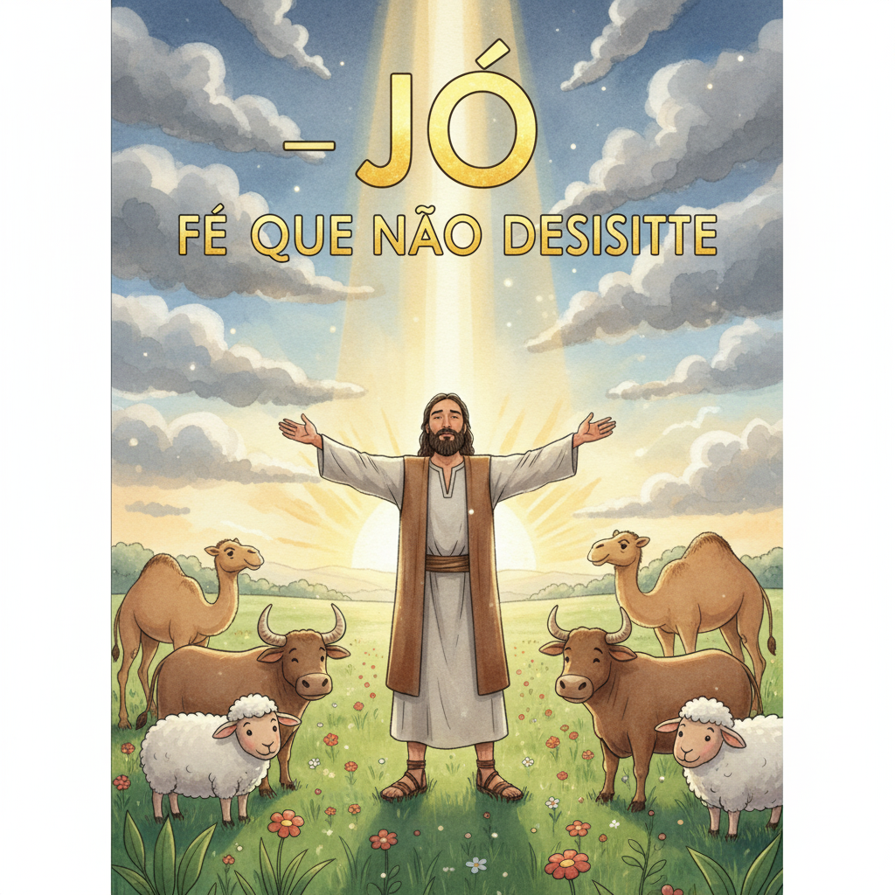
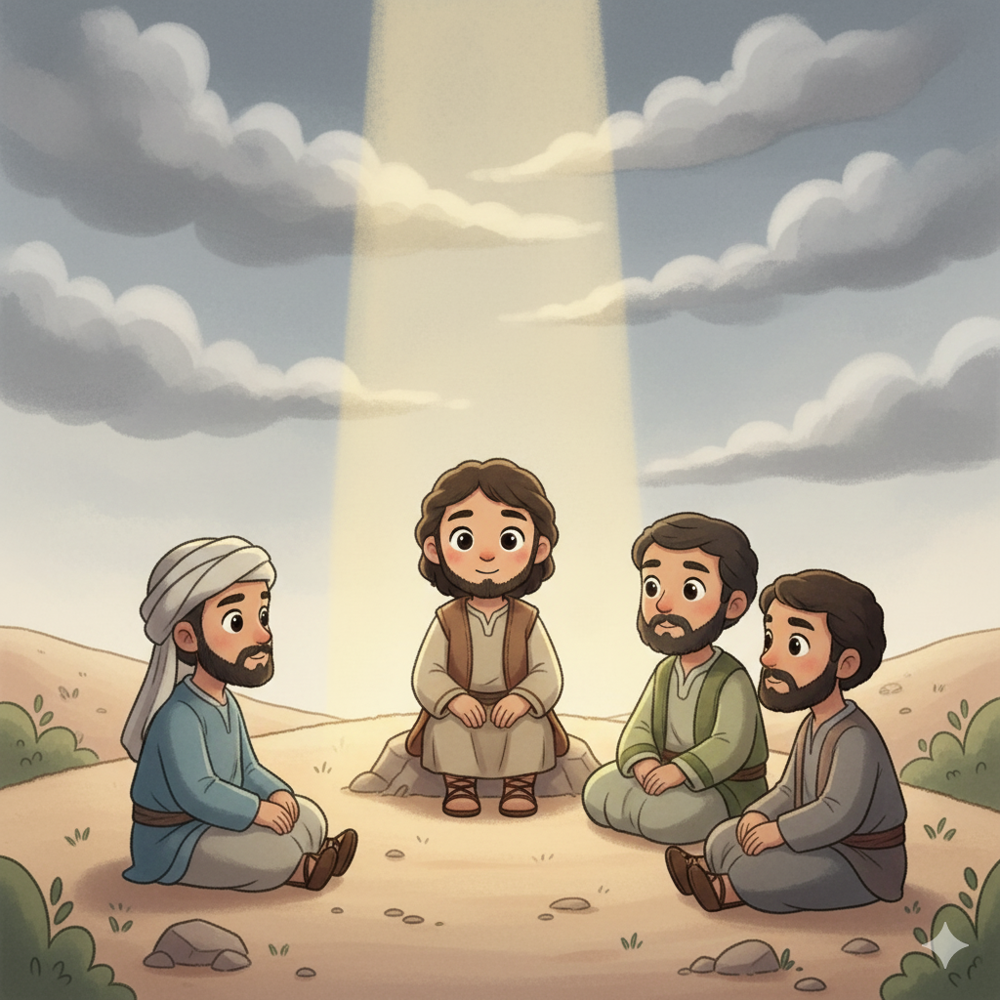
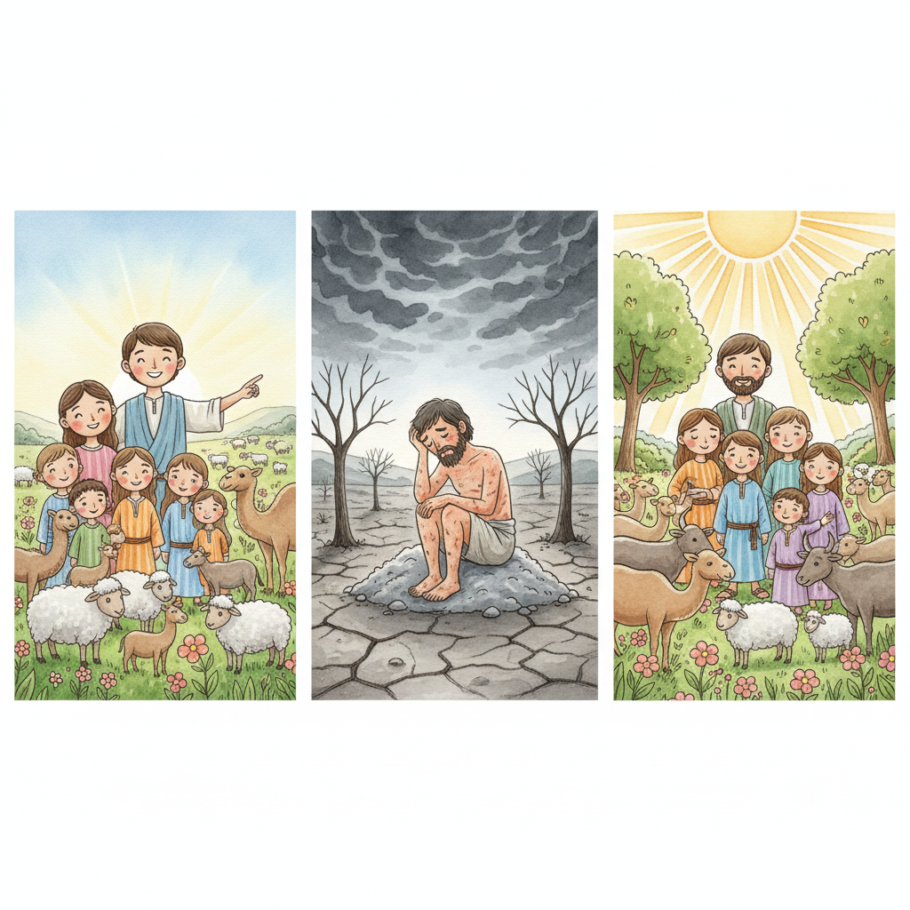
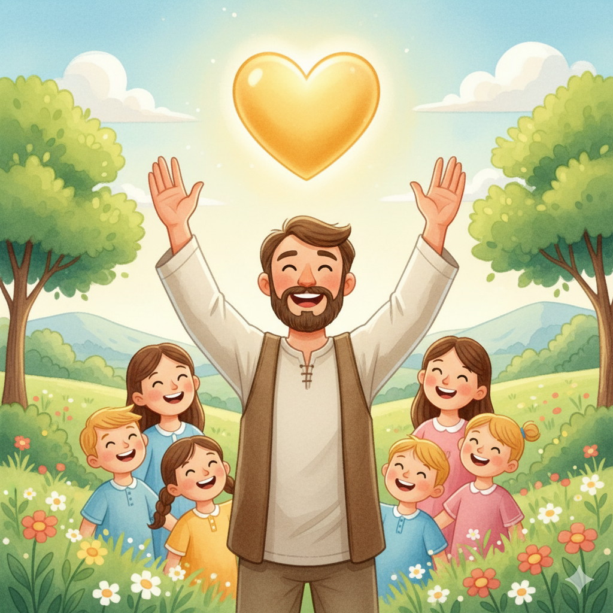

O Homem que Saiu como Ouro — Um Resumo Visual para Crianças
Jó perdeu tudo — família, bens, saúde e mais,
Mas sua fé em Deus permaneceu firme demais.
Mesmo chorando, sofrendo, sem entender,
Ele continuou confiando, sem se render!
As tempestades vêm pra testar nosso coração,
Mas a fé verdadeira permanece firme na aflição!
📖 Jó 1:21 — "O Senhor deu, e o Senhor tirou; bendito seja o nome do Senhor."
Jó tinha muitas perguntas, queria respostas,
Por que tanto sofrimento? Por que tais apostas?
Mas Deus é maior, Seus caminhos são altos,
Às vezes não entendemos, mas Ele sabe os atalhos!
Não precisamos entender tudo que Deus faz,
Só precisamos confiar que Ele é capaz!
📖 Jó 38:4 — "Onde estavas tu quando lancei os fundamentos da terra?"
O final da história é lindo de ver,
Deus restaurou Jó, fez tudo florescer!
Deu o dobro de tudo que ele havia perdido,
Porque Jó permaneceu firme e não foi vencido!
A recompensa de Deus é maior que a dor,
Ele restaura tudo com Seu imenso amor!
📖 Jó 42:10 — "O Senhor restaurou a sorte de Jó... e o Senhor deu a Jó o dobro."
🔥
"Mas ele conhece o meu caminho; se me provar, sairei como ouro."
Jó 23:10
Jó disse isso no meio do sofrimento, quando ainda não via saída. O ouro precisa do fogo para ficar puro — e Deus usa as dificuldades para nos tornar mais preciosos do que éramos antes!
Jó era um homem bom, temente a Deus e afastado do mal. Perdeu tudo em um só dia — filhos, bens e saúde — mas nunca abandonou o Senhor, mesmo sem entender o porquê.
📖 Leia na Bíblia — Jó 1:1
"Havia no país de Uz um homem chamado Jó; era esse homem íntegro e reto, temente a Deus e que se desviava do mal."
Elifaz, Bildade e Zofar vieram visitar Jó para consolá-lo. Por sete dias ficaram em silêncio — isso foi bom! Mas quando começaram a falar, disseram coisas erradas, acusando Jó de ter pecado.
📖 Leia na Bíblia — Jó 42:7
"Não falastes de mim o que é reto, como o fez o meu servo Jó."
No clímax do livro, Deus fala de dentro de um grande vento — o "turbilhão". Ele não dá explicações, mas faz 70 perguntas que mostram Sua grandeza infinita e a pequenez de tudo que imaginamos saber.
📖 Leia na Bíblia — Jó 38:4
"Onde estavas tu quando lancei os fundamentos da terra? Dize-mo, se tens entendimento."


📖 Leia em casa!
Jó tem 42 capítulos — o maior livro poético da Bíblia. Uma história de sofrimento, fé e restauração!
⚡ Capítulos 1–2 — A Queda
Jó perde filhos, bens e saúde num só dia. Satanás tentou provar que Jó só amava Deus pelas bênçãos — mas errou!
📖 Jó 1:21 — "O Senhor deu, e o Senhor tirou; bendito seja o nome do Senhor."
🗣️ Capítulos 3–37 — Os Debates
Jó e seus amigos debatem por longos capítulos. Os amigos erram ao julgar; Jó erra ao reclamar demais — mas nunca desiste de buscar Deus.
📖 Jó 13:15 — "Ainda que ele me mate, nele esperarei."
🌪️ Capítulos 38–41 — Deus Fala
Deus aparece no turbilhão e faz perguntas majestosas sobre a criação. Jó percebe o quanto Deus é maior e se humilha.
📖 Jó 38:4 — "Onde estavas tu quando lancei os fundamentos da terra?"
🌅 Capítulo 42 — A Restauração
Jó ora pelos amigos que o magoaram. Deus restaura tudo — e dá a Jó o dobro do que ele tinha antes!
📖 Jó 42:10 — "E o Senhor deu a Jó o dobro de tudo o que ele tivera antes."
O livro de Jó ensina que sofrimento não significa que Deus nos abandonou. Ele estava presente do começo ao fim — inclusive no momento em que Jó mais sofreu.
📖 Jó 1:8
"Consideraste o meu servo Jó? Porque ninguém há na terra semelhante a ele."
Jó chorou, reclamou e questionou Deus — mas nunca O abandonou. Isso mostra que é normal ter perguntas difíceis, desde que continuemos buscando Deus com honestidade.
📖 Jó 13:15
"Ainda que ele me mate, nele esperarei."
Quem persevera na fé recebe de Deus mais do que perdeu. A última parte da vida de Jó foi melhor que a primeira — prova de que Deus não deixa de cuidar dos Seus filhos!

"Por que pessoas boas sofrem?" é a pergunta mais antiga da humanidade. Jó mostra que nem sempre Deus dá a resposta — mas sempre dá a Si mesmo.
📖 Jó 42:5
"Eu te conhecia só de ouvir, mas agora os meus olhos te veem."
Deus está no controle de tudo — mesmo do que não entendemos. Seus planos são maiores e mais sábios do que nossa mente pode imaginar.
📖 Jó 38:4
"Onde estavas tu quando lancei os fundamentos da terra? Dize-mo, se tens entendimento."
🌟 Lição Principal: Confiar em Deus mesmo sem entender — pois Ele é bom, soberano e sempre nos restaura!
Muitos estudiosos acreditam que Jó é o livro mais antigo de toda a Bíblia — possivelmente mais antigo até que os livros de Moisés!
🌌 Ciência no turbilhão: Nos capítulos 38 a 41, Deus faz perguntas sobre estrelas, neve, raio, gravidade e animais — uma aula de astronomia, meteorologia e zoologia em forma de poesia!
✝️ Conexão com Jesus: No meio do sofrimento, Jó declarou: "Eu sei que o meu Redentor vive!" — uma profecia sobre Jesus, que ressuscitou e vive para sempre! (Hb 7:25)
🥇 O dobro de tudo: No final, Jó recebeu 14.000 ovelhas, 6.000 camelos, 1.000 juntas de bois e 1.000 jumentas — exatamente o dobro do que tinha antes!
Converse com sua família, turma ou professor sobre essas perguntas!
💪
Jó perdeu tudo em um dia, mas disse "bendito seja o nome do Senhor". Você já passou por algo muito difícil e conseguiu confiar em Deus assim mesmo? Como foi?
👥
Os amigos de Jó tentaram ajudar mas disseram coisas erradas. Quando um amigo está triste, como você age? O que ajuda mais — explicar ou só estar presente?
🌪️
Deus não explicou a Jó por que tudo aconteceu — mas Jó continuou confiando. É difícil confiar em Deus quando você não entende? O que te ajuda a confiar mesmo sem entender?
Escolha um desafio (ou faça os três!) e seja um explorador da Bíblia!
📖
Leia Jó capítulo 1 e depois o capítulo 42 para alguém da sua família. Veja como a história começa na tragédia e termina com o dobro de bênçãos!
🔥
Memorize Jó 23:10: "Se me provar, sairei como ouro." Escreva num papel colorido e cole no seu quarto. Esta semana, quando algo difícil acontecer, lembre esse versículo!
❤️
Jó foi restaurado quando orou pelos amigos que o magoaram. Pense em alguém que te feriu com palavras ou ações. Esta semana, ore por essa pessoa de verdade — e veja o que acontece no seu coração!
Trilho Kids | Desenvolvido com ❤️ para crianças © 2025